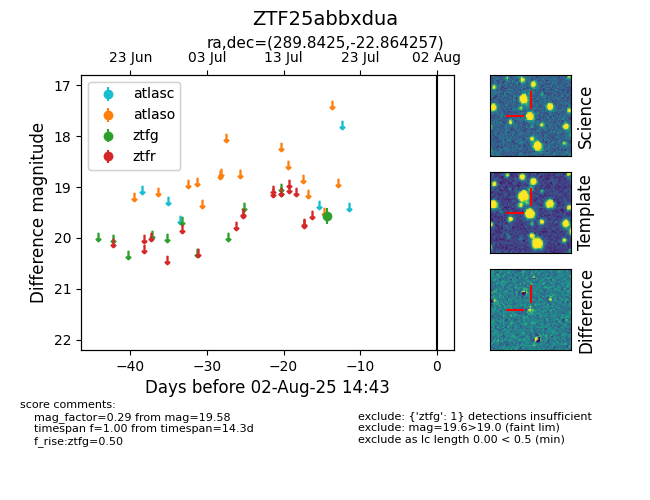

Target ZTF25abbxdua at 2025-08-02 14:43, see:
FINK: fink-portal.org/ZTF25abbxdua
Lasair: lasair-ztf.lsst.ac.uk/objects/ZTF25abbxdua
ALeRCE: alerce.online/object/ZTF25abbxdua
alt names
ZTF25abbxdua (ztf,fink)
coordinates:
equatorial (ra, dec) = (289.8425,-22.86426)
galactic (l, b) = (15.0706,-16.07355)
photometry
last ztfg=19.58
1 ztfg detections
